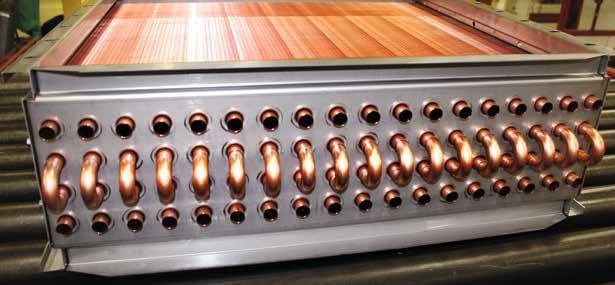

U-bend gripper
optimization
This Duke–Trane course project focuses on improving insertion accuracy in an existing factory system for robotic U-bend insertion during evaporator-coil assembly. My work focuses on gripper optimization for consistent part positioning, insertion alignment, and copper protection.
- Status
- In Progress
- My role
- Mechanical gripper optimization
- Context
- Duke University × Trane Technologies
ME555 Robotic Manipulation - Timeline
- Sep 2026 – Present


Copper U-bendPhoto © Trane · SureFit™ Coils brochure.
Project background
The existing factory cell uses a bowl feeder to present copper U-bends, an overhead camera to provide position and in-plane orientation, and a robot to insert both legs into a pair of tube ends. Both legs must align with their openings and enter together.
Why the gripper matters
Uneven gripping can tilt the U-bend, causing one leg to contact a tube rim before the other and increasing the risk of jamming or copper damage.
The team also explores insertion compliance and vision for alignment and placement checks.
Gripper design priorities
I am responsible for mechanical gripper optimization, focusing on the contact interface between the gripper and the copper U-bend.
- Consistent U-bend positioning and tilt control.
- Clearance for gripper opening and withdrawal near neighboring tubes and corners.
- Stable gripping with protection against copper damage.
- Manufacturable and replaceable contact parts.